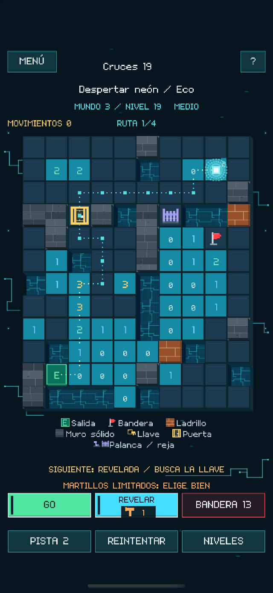
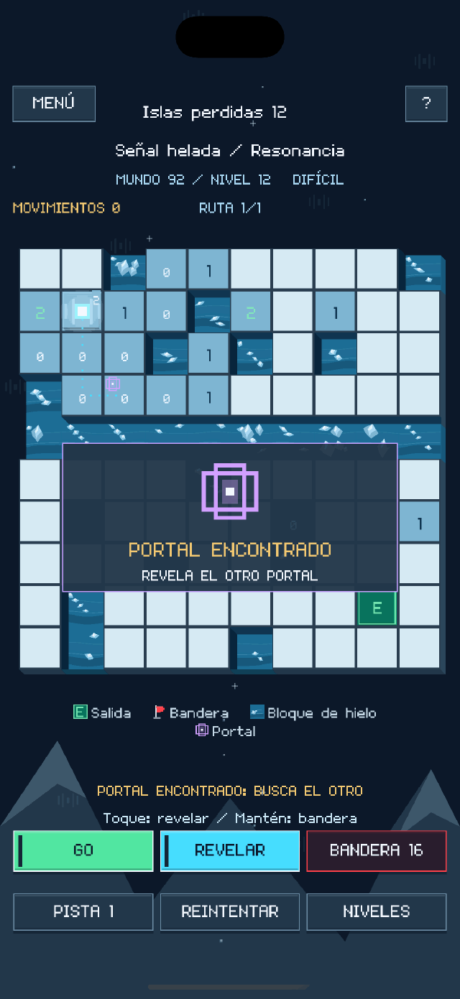

01
Planea el camino
Lee los números, marca las minas y encuentra una ruta segura.
Ya disponible en Google Play
Lee los números, marca las minas y descubre un camino seguro hasta la salida. Tú preparas el camino. La luz lo sigue.


Disponible en Android
Lee las pistas, marca las minas y guía una pequeña luz por rutas seguras y mundos de puzles.

Lee los números, marca las minas y encuentra una ruta segura.

Llaves, portales y obstáculos hacen único cada mundo.

Empieza con 60 puzles gratuitos y desbloquea el resto cuando quieras.
Lumen Mine · YouTube
Mira este vídeo corto del juego y descubre sus puzles, mundos y capturas de pantalla.
Explora gratis los tres primeros mundos. Una única compra dentro de la app desbloquea el juego completo, con 300 mundos y 6.000 puzles en total.